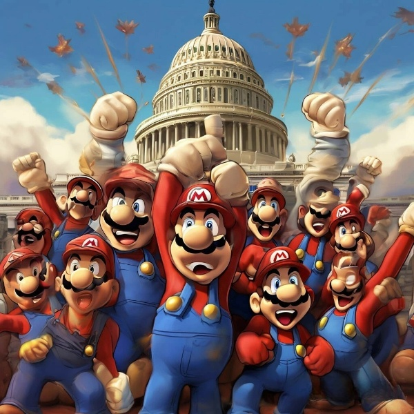

Сражение достигло кульминации, и с помощью последних
остатков силы и единства, Марио и его клоны смогли одолеть
огромного демона тако. Разрушительное зло было побеждено,
и Вашингтон начал медленно восстанавливаться.
После победы клоны начали исчезать, их тела растворялись
в воздухе, оставляя лишь оригинального Марио. Он стоял
один на поле боя, но чувство единства и силы, которые он
испытал, остались с ним. Марио был готов вернуться домой,
зная, что сила единства и решимость могут справиться с любыми трудностями.